POETRY PRINTS
Designed with images captured while walking and writing at my local beach. Filter by tag below. Poems can carry more than one tag.


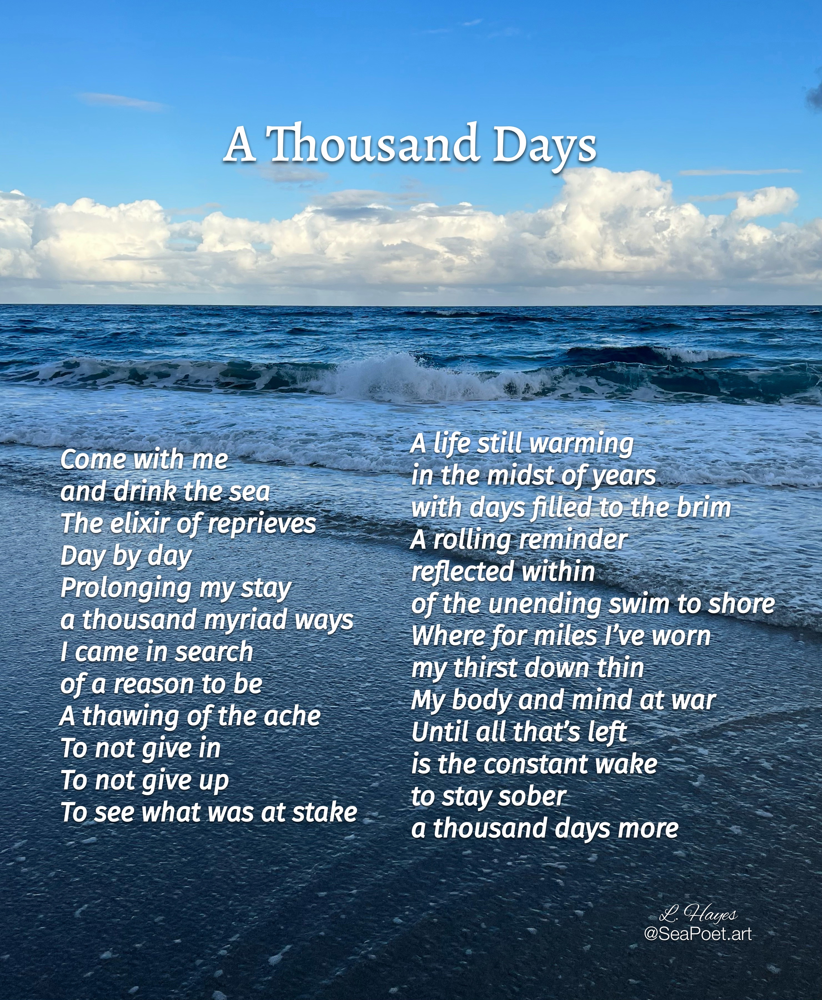
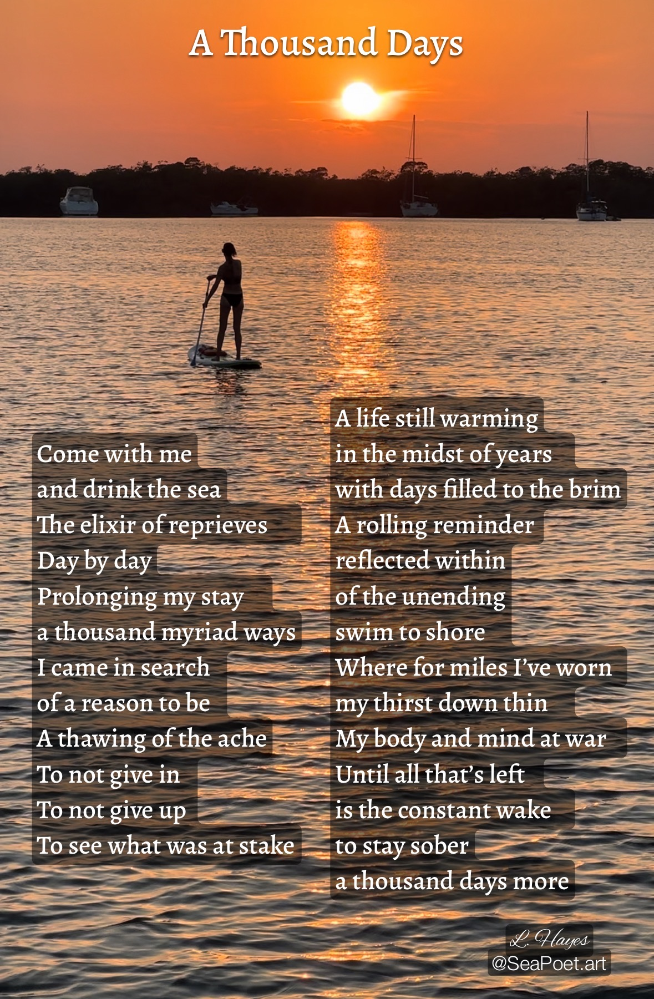


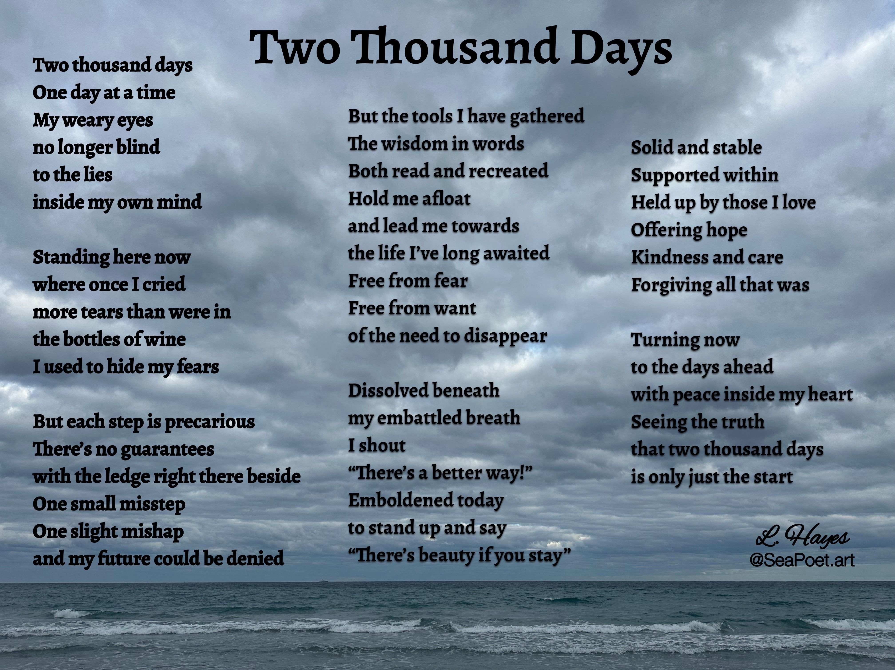

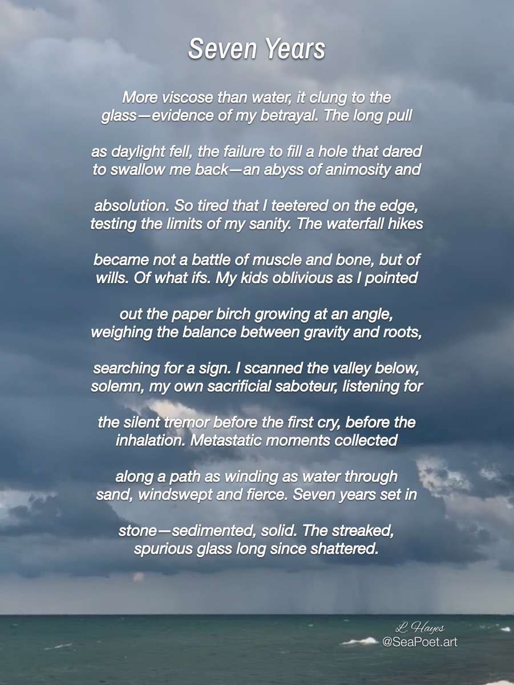
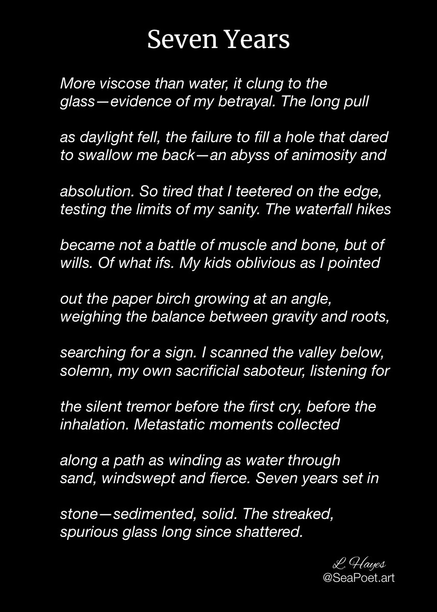
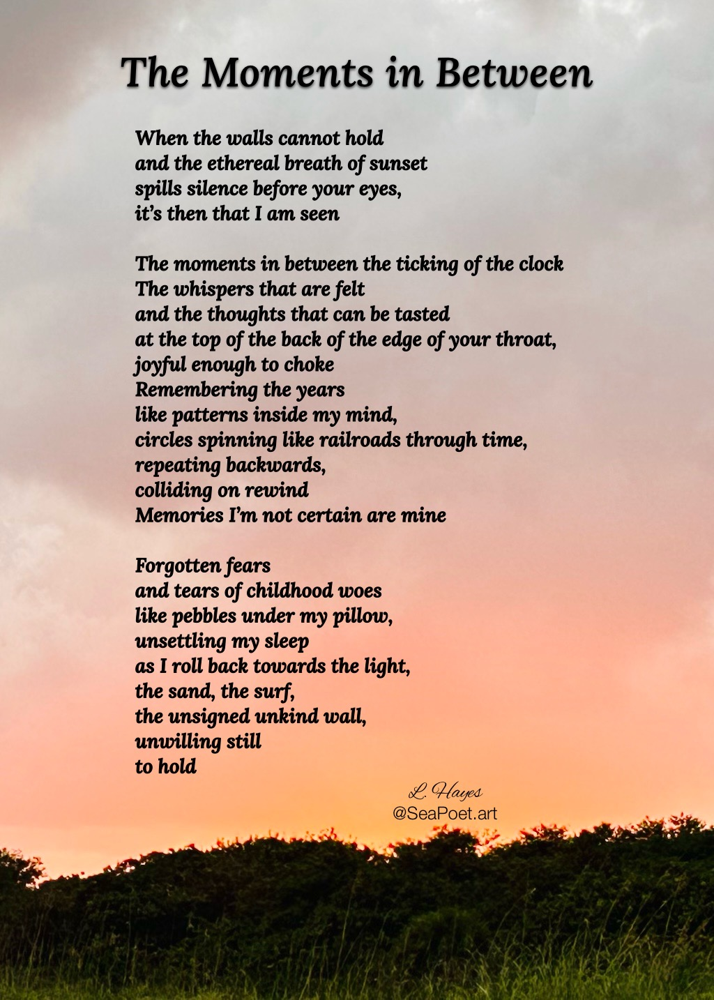
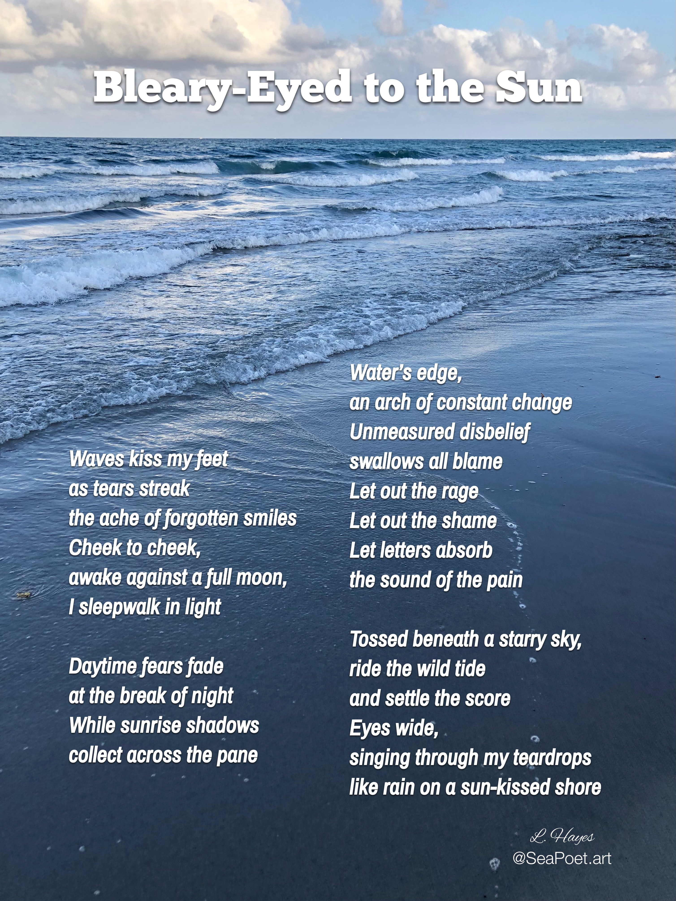
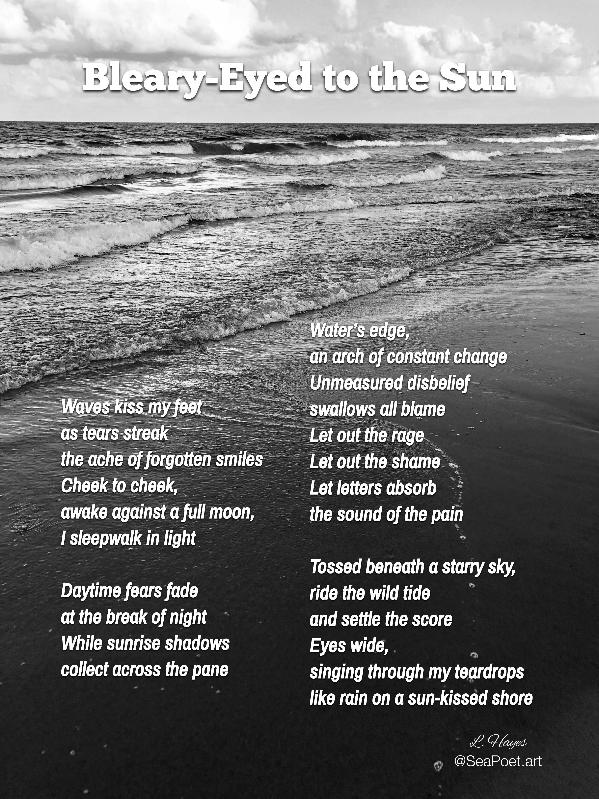

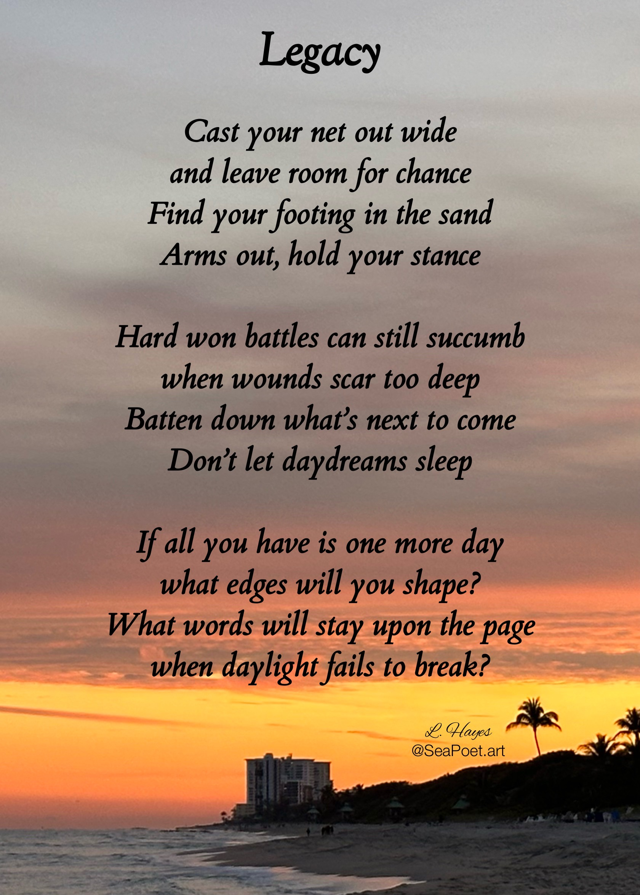
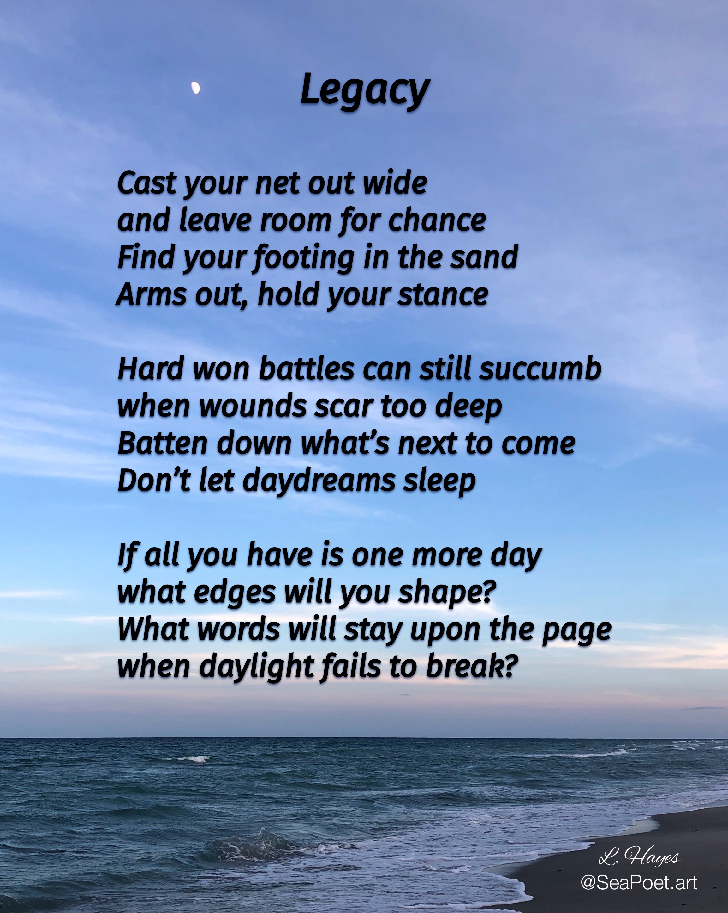
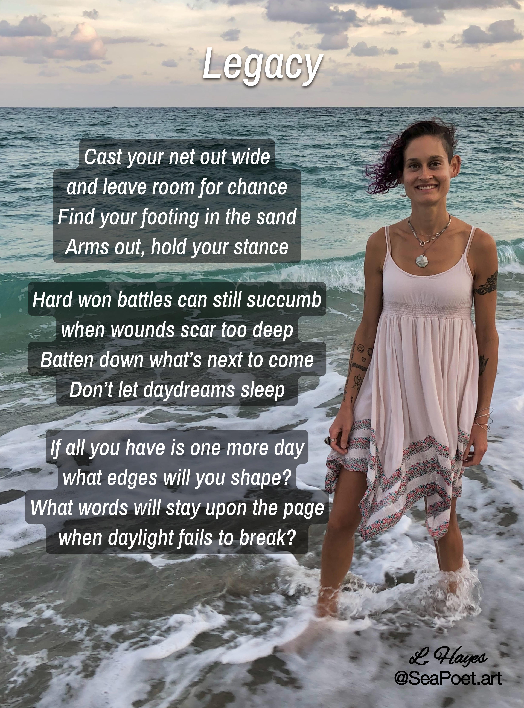


No poems match that filter yet — check back soon!